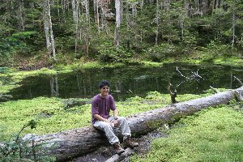
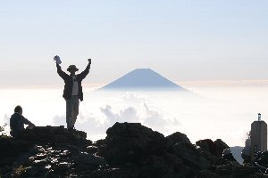
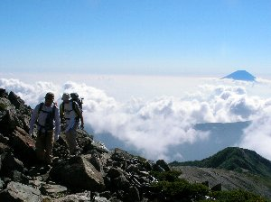
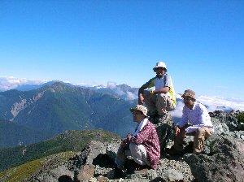
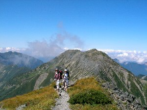
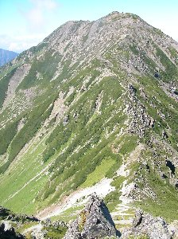
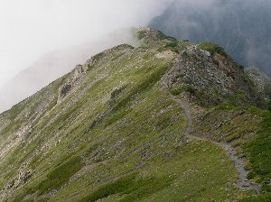
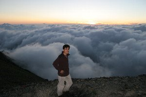
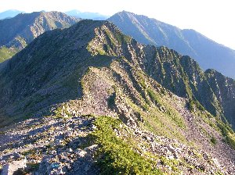

南アルプス登山 | 2006年9月 |
|---|---|
| ここ数年、年１回は南アルプスに行っているが、今年は南アルプスの象徴でも有る「赤石岳」に行く事になった。 メンバーは会社の後輩二人（内一名は初心者）で、計３名。 赤石岳だけ登るのは、ちょっと寂しいだろうと言う事で、千枚岳からぐるりと尾根を廻り、3000m超の山を攻める事になった。 よって期間は二泊三日。 《１日目》 南アルプスの玄関口椹島は、一般車は入ることが出来ない為、東海フォレストの送迎バスを利用する。これは、東海フォレストの運営する山小屋を利用する人に限り無料で、畑薙第二ダムから椹島までを送迎してくれる。 この辺の山小屋は殆どが東海フォレスト運営なので、まず問題は無いだろう。 7:00amに畑薙第二ダムに到着。8時のバスを待つ。 畑薙第二ダムから椹島まで1時間と言ったところだ。 9:30amに椹島を出発し、本日の宿泊地「千枚小屋」を目指す。 椹島が標高1100m位で、千枚小屋が2610m位なので、本日の標高差は1400m位・・・・・・結構登りますね。 千枚小屋までは樹林帯を歩いて行くので、展望は良くないけれど結構歩きやすい。 もともと林業で木材を搬出していたから、緩やかな山道なんです。（搬出していた道とは違う様で、登山道に沿うように林道が有る） 途中、湿地帯とかが有り、綺麗です。 | |
|  途中の湿地帯 |  千枚岳山頂にて富士山をバックに |
| 4:00pmに千枚小屋に到着〜。 結構疲れました。時間も掛かったし。 まあ、軟弱メンバーとしては、頑張ったかな。 小屋からは雲の隙間から富士山を眺めることが出来て、早速ビールを購入し外のテーブルで一杯。 これが美味い！ やっぱ、動いた後のビールは最高です♪ 小屋は、二食寝具付で7500円。弁当1000円でした。綺麗な建物で、結構人が居ましたが、混んでは居ないので悠々寝れます。 布団が寝袋と毛布ってのは、ちょっと寂しいですがね。 この日は、朝も早かったので、早々に就寝。 《２日目》 5:00am起床して、日の出を待つ。本日も快晴。小屋から富士山と日の出が見れます。 朝食を食べて、6:30am出発。遅くなってしまった。 本日はメインとも言うべき、3000m超を六個＋千枚岳を攻める日です。 まあ尾根伝いに行くだけですが、アップダウンが結構有りそうで、厳しい日になりそうです。日差しも既に暑くなってきています。 | |
|  丸山から荒川東岳に行く途中 |  荒川東岳山頂にて。後ろに北岳が見える |
| まずは、千枚岳（標高2880m）。 最高に景色が良いです。山頂付近まで樹木がある為、いきなり視界が開ける感じがあり、東は富士山、南西にかけて本日攻める山々が見渡せます。 素晴らしく綺麗です。 赤石岳方面も見えますが、途中の尾根はだいぶ標高が下っており、「あれ、１回下るのか」と絶望的な気分にもさせられます。 記念写真とかパシャパシャ撮って出発。 次は丸山（標高3032m）。 ついに3000m超の第一歩です。 丸山は東岳（悪沢岳）の行く途中に有る感じで、通り過ぎちゃいそうです。 しっかり記念写真撮影。 そして荒川東岳（悪沢岳・標高3141m）。今回一番高い山で、日本でも6番目に高い山です。もちろん日本百名山です。 山頂は大きな石がゴロゴロしていて、周囲から一際高い為、北側の北岳方面まで見えます。 ここでも撮影タイム。 ここから一度大きく下る分けですが、ここの傾斜は結構きつく、足を踏み外せば即死亡って感じです。 初心者に、かなりビビリが入り「こんなの聞いてねーよ！」と悪態をつきながら走破。 標高を2600〜2700m位まで落として、また登るので結構きつい。 気分的にも。 さて、ようやく荒川中岳（標高3083m）です。 そろそろ疲れてきて、言葉も少なくなって来てます。 でも写真撮影はしっかりと！ | |
|  後ろに見えるのがこれから行く荒川中岳 ・・・遠いジャン！尖った山の下に小屋見えます？ |  これから登る荒川中岳 |
| 次は比較的近くにある荒川前岳（標高3068m）。 本来の尾根ルートからちょっとだけ、外れますが簡単に行けます。 ここから又、激しく下ります。 途中、雷鳥を発見するも、後輩に「雷鳥と鳩って何が違うですか？」と全うな質問に答えられず、余計疲れを増して進みます。 途中の荒川小屋に到着（2610m）。 今夜の小屋は水が無い為、ここが最後の給水所ですから、大量に取得し、疲れと共にザックが一際重くなりました。 なだらかな下りをへて、目の前に小赤石岳の山が迫ります。 これをこれから登るのかと思うと、目まいがしてきます。 一歩一歩足を踏みしめながら何とか登頂。 と、思ったらまだ山頂ではなく、尾根をしばらく歩きます。霧も出てきて、視界は不明瞭になってきました。気分も落ち込みます。 （もう、嫌だ〜） やっと小赤石岳（標高3081m）に到着したときは、既に3:30pmとなってました。 小屋には4:00pmに着きたいけど、もう無理でしょう。 | |
|  小赤石岳から見る赤石岳方面への登山道 |  赤石岳山頂の夕日 |
| 下がりたくないけど、ちょっと下って今度は赤石岳を目指します。 この辺りから、私の体力は目に見えて落ち込んできて、一歩踏み出すのが大変になってきました。 もう、やばいです。背中が重い。 なんでこんなことしてるんだろ・・・・ 何とか赤石岳(標高3120m・日本百名山)を経て、山頂脇に有る「赤石避難小屋」に到着〜〜。本日の宿泊地です。4:30pmでした。遅い。 またしてもビールを買い、一杯。 う〜ん、美味〜〜〜♪ 避難小屋は基本的に食事が出ないので、自分達で食事の準備。 私の献立はレトルトカレーです。（定番すぎ）ガスでお湯を沸かします。 夕食を食べ終わった頃、外の雲が晴れてきて、夕日が見えてきたので、急いでカメラを持って赤石岳まで行きました。 山頂は周りを雲海に埋め尽くされ、その雲海の中を夕日が沈んでいく、絶好のロケーションでした。 山の上でしか見ることが出来ない光景です。 月が綺麗な晩で、あいにく星を観察することは無理そうです。 月がもの凄く眩しいから。（満月もしくは満月に近かった） その日の晩も、早めに就寝。 小屋には私達の他に４人しか居ない為、周りの寝袋使いたい放題。 ふかふか状態で寝ました。 《３日目》 朝、4:00起床。 星を観測したかったからです。 月は夜半には沈んで、冬の星座オリオン座が、東の空から上がって来たところです。 星って沢山有るよね。 急いで朝食を食べ（私の献立はうどん）、日の出を見る為に、赤石岳山頂へ。 今日も富士山が良く見え、 朝日の神々しいまでの赤い光を全身に浴びて、そろそろ出発時間です。 ここ二日で我々の速度は、目安時間より遅いことが分かっていたので、悠長に休んではいられません。 本日は椹島までの標高差2000mを下らなければなりません。 目安時間は5:30だったと思いますが、7時間は見ないと安心出来ません。 2:00pmの送迎バスが最終なので、間に合わないと明日の仕事に行けないのです。 6:00amから下り始めます。 最初は凄い下りです。 途中の展望台で、またまた長い撮影タイム。 ここも凄い景色良いんですよ。 確か富士見台って言ったかな？ 富士山と、昨日登った山々が一望出来る場所です。 天気も良いから最高ですね。 | |
 赤石岳山頂の日の出 |  昨日歩いた小赤石岳・中岳方面が見える |
| 下りは転ばないように、足を痛めないように慎重に行きました。 他の人達と、何度抜きず抜かれずを繰り返し、休憩をしてきた事か。 これ逆周りだと、この2000mを登らなければなりません。とっても私には無理だと思いますが。 GPSでも椹島が見える位置まで来たときは嬉しかった。しかし、GPSは残り標高差400mを示しています。 あれ？、この距離で400m下るの？ 最後の最後、この400m下りがマジきつかった。 ジグザグに同じような景色、同じよう急勾配で降りていくのですが、下に道路が見えるのに中々着かない。 椹島に着いたときは、足がへろへろです。 12:30pmでした。 何とか2時のバスには間に合いました。 レストランでラーメンを食べ、木陰で休息し、バスに乗って帰りました。 キツイ行程でしたが、その分美しい景色にも出会え、最高のコースと言えるでしょう。 もちろん上級者には、大した事ない行程でしょうがね。 それと、今回のコースは全て静岡市なんです。葵区。 なんと地元の山を巡って来たわけですよ。 日本百名山を二つと、3000m級を6個は、なかなか良いでしょう？ 南アルプスは美しい山々に出会えるので、またどこか攻めてみたいですね。楽なところが良いけど。そんな所無いよな〜 | |
| 写真：コメント ｂｙ べっしー | |